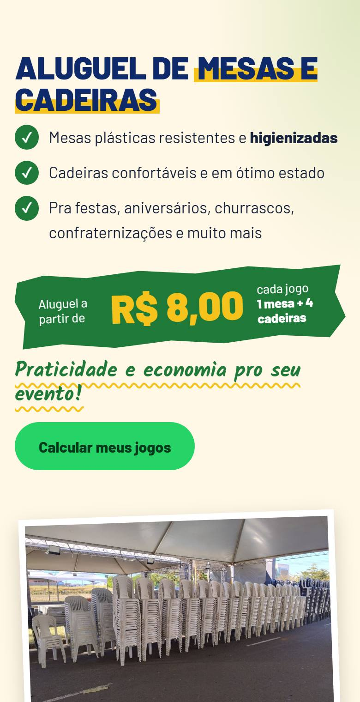

O que é novo
- O jogo de 1 mesa + 4 cadeiras sai por R$ 8,00.
- No frete, a pessoa toca no que vai levar e o pedido já sai pronto.
- O pedido chega no WhatsApp do Sandro com tudo: o que, quanto, quando e onde.
O site

Mesas e cadeiras
Mostra o aluguel: o jogo de 1 mesa + 4 cadeiras a partir de R$ 8,00.
- Calcular meus jogos: leva a pessoa direto pro pedido.
Como alugar
3 passos curtos: monta o pedido no site, manda no WhatsApp, o Sandro entrega e busca.
Fretes e carretos
Fretes em Paraíso e região, valor a combinar.
- Tocar no que vai levar (moto, mudança, geladeira...): o pedido de frete já vem pronto.
O pedido
Orçamento em 1 minuto
A pessoa escolhe Mesas e cadeiras ou Frete, preenche o que souber e toca pra mandar. A mensagem chega no WhatsApp do Sandro com tudo: o que, quanto, quando e onde.
- + e −: quantos jogos, cadeiras e mesas avulsas.
- A reserva só vale depois de mandar no WhatsApp; só preencher não reserva.
Mudar o site
Preço, telefone e mensagens
Preço, telefone e mensagens ficam num lugar só do site: mudou lá, muda no site inteiro. O preço do jogo também aparece no texto da página, então muda nos dois.
- Pede pro Orfeu na Geral com o valor novo, ou edita direto se estiver no PC.
Publicar
O site fica no Netlify. Depois de mudar, a pasta do site sobe de novo e em 1 minuto está no ar.
No app, em Projetinhos > S.L. Locação e Fretes, ficam o botão do site, o WhatsApp do Sandro e o Onde mudar.